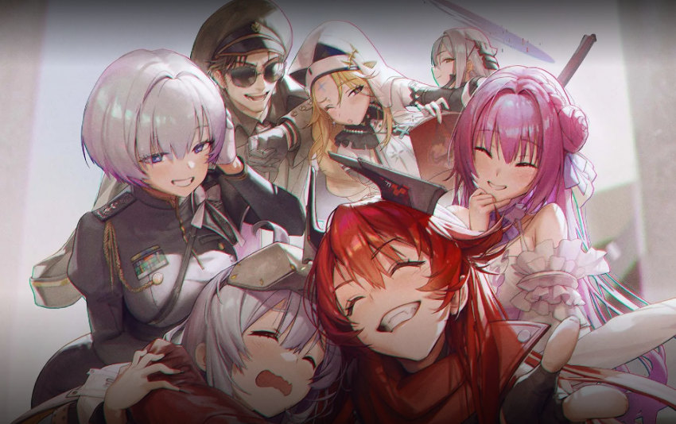

| 니케별, 스킬레벨, 오버로드, 큐브 셋팅등을 간략하게 보실 수 있는 정보 입니다.
| 오버로드 : 필수 오버로드 셋팅과 유효 추가 옵션으로 구분되어 있습니다. 빨간색은 셋팅 금지
| 표기가 잘못 되어 있거나 최신화가 안되어 있을 경우 요청해 주시면 반영 하도록 하겠습니다.
클릭 하시면 구글 시트로 연결 됩니다.
1. 스킬 빌드업 순서 : 검정색 - 하늘색 - 주황색 - 자홍색
2. 소장품/애장품 빌드업 순서 : R 5단계 > R 15단계 > SR 5단계 > SR 15단계 > 애장품 1단계 > 애장품 2단계 > 애장품 3단계
(애장품 3단계는 필수 니케 모두 2단계 완료 후 진행 권장 )
3. 도태되어 현재 사용하지 않는 니케는 제외
4. 오버로드 ( )는 최소~권장하는 갯수
5. 신규 유저는 PVP 니케 과투자 금지
※ 2026년 9월 7일 기준 : 신규 니케 길티 : 마이티 바니